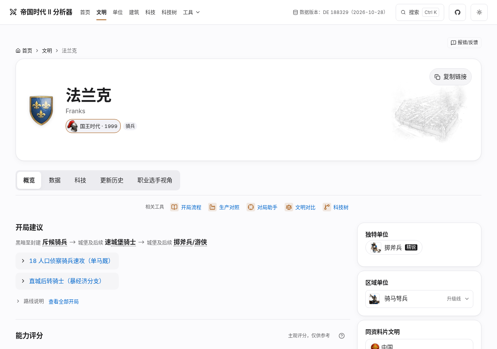
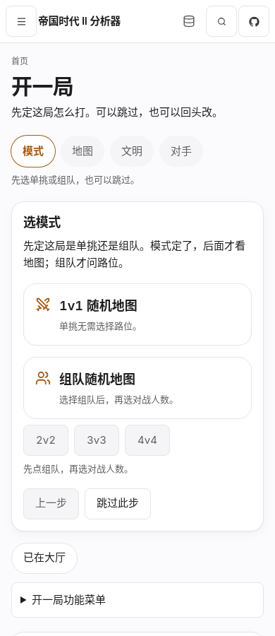
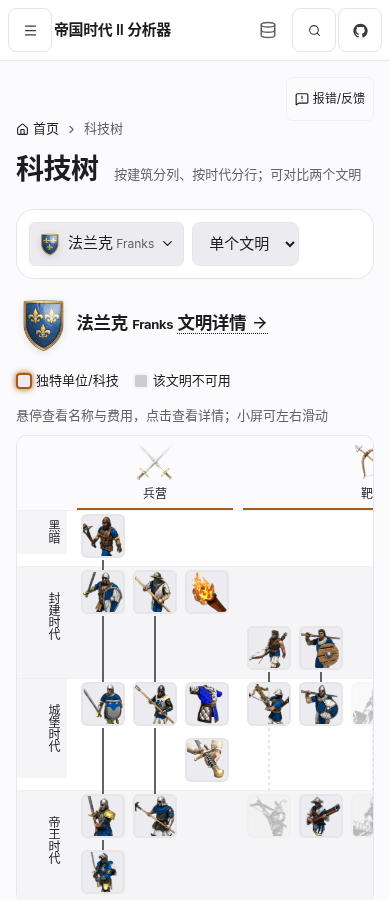
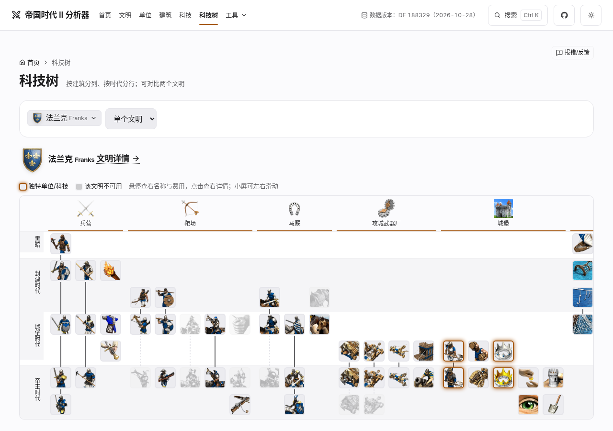
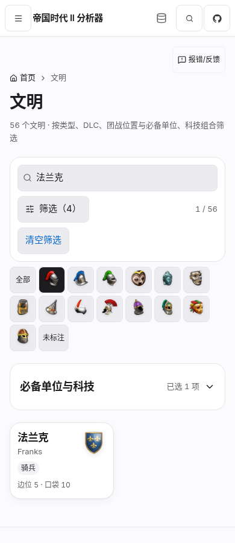
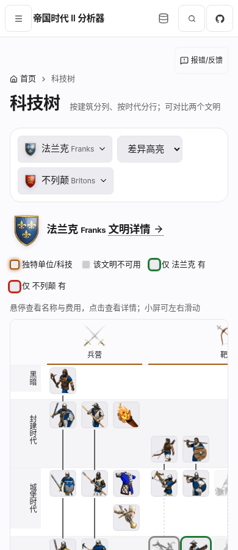
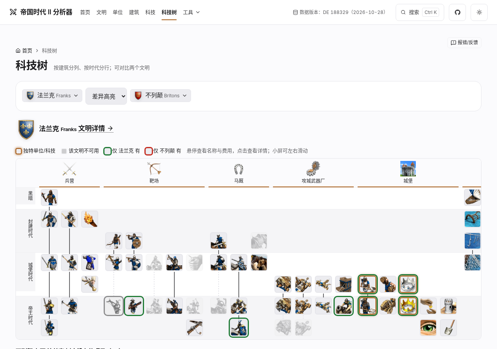

2026.11.09 · Task-focused UI review
让选择、推荐与核心数据
更早进入视线。
对帝国时代 II 分析器进行一次以真实页面问题为导向的调研与优化。只处理移动列表筛选、开一局信息层级、文明与单位详情扫描三项，复用现有组件与设计令牌。
检查尺寸：1280 × 900 / 390 × 900日期：2026-11-09 · Asia/ShanghaiPR #830 审阅证据 · UI基线483e513 · 远端CI见PR
01列表先给结果搜索和已选条件保持可见，高级筛选按需展开。
02当前操作与结论优先计算前提、限制与来源保持完整，通过清楚入口披露。
03详情减少视觉隔层核心指标分组，空内容紧凑呈现，次要信息平铺。
Context & evidence
理解产品，再判断问题
产品是面向 AoE2 DE 用户的中文资料站与计算工具。典型任务是筛选可用文明与单位、查属性和加成、按当前对局选择查看有限场景建议，再进入已有分析工具。
代码与设计基础
已读 AGENTS、CONTRIBUTING、架构与现有 Design System。React / TypeScript / HashRouter；导航与页面登记表统一管理路由。沿用 CatalogFilters、DetailSection、StatTiles、现有表单与 details 机制。
数据与计算边界
资料基于 DE 188329 及固定版本上游数据；生成 JSON、领域计算、科技方案、URL / 持久化状态协议与接口均不在本轮修改范围。场景比较不等于整局强度或胜率。
双状态实测
六类页面分别保留桌面与手机截图；首页额外检查已有场景和本局摘要，列表检查已有搜索与组合条件，详情覆盖空洞察与非空洞察，科技树检查已选文明。
基线与交付状态分开记录。公开网站核对版本为 v0.77.64，构建 483e513；本地基线提交为 483e513608a6a60150b54f4a70afaa0875b28a79。下文“优化后”指本地实现截图。报告不以本地结果代替生产上线证明。
在线地址：linhongcun.github.io/aoe2-analyzer。公开首页原始截图另行保留，前后主对比使用相同本地基线与相同状态。
查看公开站点版本核对截图
Phase 01 · Independent findings
四个观察，逐项核实
以下是优化前的真实观察。先区分首次进入与已有选择状态，避免把局部问题扩大到整个产品。
y 值指页面顶部为零的 CSS 像素位置，来自本地优化前同尺寸状态；是可见性指标，不代替实际任务完成时间。
Phase 02 · Cross-industry research
借用适合任务的思路
实际浏览、截图并操作候选页面。选择依据是它们如何处理当前问题，同时记录不适合迁移的部分。样本品牌和知名度不计入结论。
01 / pub.dev：先让结果出现
复杂列表 · 手机筛选https://pub.dev/packages?q=http实际看到：390px 默认保留一行搜索与筛选入口，之后立即是结果数、排序与首条结果，标题约 y227px。点击筛选后，Platforms / SDKs / License / Advanced 在搜索和结果间展开；首条结果降至约 y645px。
可迁移：默认收起低频多组选项，保留搜索、结果数与有效条件；桌面条件直接可见。筛选展开与否只改变呈现，不改变筛选值或 URL。
不借用：纯图标入口不够容易发现，DOM 的 img 点击实现也不能直接复制。本站使用明确“筛选”文案、已选数量、语义按钮和可见焦点；也不复制长平台标签堆叠。
另存 桌面参考。展开后的区域仍较高，说明折叠是默认态安排，不能替代条件本身的合理分组。
02 / Node.js：参数紧邻推荐操作
多参数决策 · 推荐https://nodejs.org/en/download实际看到：版本 / LTS、系统、安装工具与包管理器之后紧接可复制安装命令。将 Linux 改为 Windows，安装工具自动切为 fnm，命令切为 PowerShell / winget。发行说明、签名校验、源码和旧版下载随后出现。
可迁移：当前参数与它产生的结论放在一起；关键理由就近解释。完整前提、适用范围和计算依据有明确入口，而不是全部铺在候选之前。
不借用：它不是严格编号向导，也不能证明复杂评分模型。顶部公告占高偏大，底部还有独立系统选择；这些不复制。本站继续保留必要限制摘要与原有计算口径。
另存 桌面参考。借用的是“参数—结论—进一步依据”的顺序，不复制品牌配色或命令卡片。
03 / pub.dev：核心事实与元信息分层
数据密集详情https://pub.dev/packages/http实际看到：桌面页头集中名称、版本与身份，右栏用数字、标题和细分隔线平铺文档、发布者、趋势、仓库、许可证与依赖。手机保留摘要，实测 More... 可进入 Metadata 视图，有返回入口。
可迁移：核心指标紧凑、对齐；次要属性、数据来源和关联入口以字段组呈现。本站空内容改为小型状态行，核心指标保留强调，避免每个字段都成为独立卡片。
不借用：手机 tabs 换两排、部分远端徽章在本环境受限；不照搬该导航、不新增详情路由。空值处理仍必须遵循本站数据语义，不能用空白或 0 代替未知。
查看其他真实候选与未采用原因
所有案例访问日期：2026-11-09。截图来自真实 Chromium，不做合成补绘。pub.dev 详情的第三方 README 徽章与 PyPI 部分徽章因网络资源受限破图，基础布局仍可核对；这不是对产品线上状态的故障判定。
Phase 03 · Bounded decisions
三项改动，分别对应一个任务问题
搜索、结果与条件摘要常驻
两类列表复用 CatalogFilters。≤600px 把文明类型 / 位置 / DLC 与单位文明 / 兵种 / 类别 / DLC / 时代放进同一披露区域。结果实时更新，不增加“应用筛选”步骤。
收起面板后继续显示已选数量和摘要，清空行为沿用；Escape 关闭并回焦点，隐藏内容不进入 Tab 序列。桌面直接看到完整条件。
依据：pub.dev 默认结果优先；本站已有筛选状态和组合筛选协议。
当前选择 → 推荐 → 详细依据
保留当前步骤与所选模式、地图、路位。场景旁常驻“仅比较本场景指标，不是整局强度榜，也不覆盖全部文明”。科技方案、投入和距离改为紧凑摘要，紧邻调整入口。
预先就绪前提、参考对手、未计指标和来源用有明确标题的原生 details 完整保留。本局摘要将打法结论置于跨工具跳转限制之前。
依据：Node.js 参数与推荐相邻；本站推荐计算的真实适用边界。
核心数据突出，空态保持轻量
文明与单位详情沿用 DetailSection / StatTiles；核心数值保留显著层级，次要属性更紧凑。主栏语义分区使用标题和分隔线，减少重复阴影与外框。
单位空洞察保留 section、标题与“暂无”，目标高度不超过56px；非空洞察保持完整。文明已有的“无洞察不渲染”逻辑不变。
依据：pub.dev / crates.io 桌面详情的分组；本站空值与非空内容实际差异。
必须保持：业务流程、生成数据、候选顺序、计算口径、科技方案、链接、接口、URL 与持久化状态。免责声明和来源完整可达。全站令牌与科技树实现不变。
Evidence · Before / after
同尺寸、同状态逐项对比
默认展示 390px 手机首屏，可切换 1280px 桌面。每组的优化前后使用相同状态与 900px 视口高度。点击原图核对细节，全页长截图检查折叠内容之后的页面结构与来源。
优化前 / 本地优化后 · 同尺寸与状态 搜索与结果数常驻，DLC、时代及高级条件在手机按需展开；桌面仍直接显示。
DLC 与普通筛选一起收纳；既有“必备单位与科技”组合筛选继续沿用。
03 · 已有选择 · 阿拉伯 4v4 / 中路 / 选文明
开一局 · 场景建议
对比当前参数、候选推荐与完整计算前提的位置。此处是本轮首页层级优化的主要场景。
04 · 空洞察样本 · #/unit/38
单位详情 · 骑士
“鲜为人知 / 暂无”保留语义和文案，改为紧凑状态；生命、攻击和护甲等关键数据获得更清楚的层级。
05 · 详情概览 · #/civ/Franks
文明详情 · 法兰克
保留加成、关联入口与来源，用标题、分隔线和间距减少同级卡片的竞争。
优化前1280 × 900此截图尚待生成或补入，不能据此判断结果。
本地优化后1280 × 900
此截图尚待生成或补入，不能据此判断结果。
初始“选模式”本来没有大量计算前提；保留模式、步骤、跳过与功能菜单，避免为统一视觉而改动正常流程。
优化前390 × 900
此截图尚待生成或补入，不能据此判断结果。
本地优化后390 × 900
此截图尚待生成或补入，不能据此判断结果。
07 · 已有选择 · 法兰克 / 阿拉伯 4v4 / 中路
开一局 · 本局摘要
打法与本局场景先于跨工具跳转限制；限制以清楚标题的披露区保留。
08 · 非空洞察样本 · #/unit/83
单位详情 · 村民
检查非空洞察仍完整展示，验证紧凑空态不会误伤真实内容。
只检查响应式与原有行为；本轮不修改科技树实现。
优化前390 × 900
此截图尚待生成或补入，不能据此判断结果。
本地优化后390 × 900此截图尚待生成或补入，不能据此判断结果。
优化前1280 × 900
此截图尚待生成或补入，不能据此判断结果。
本地优化后1280 × 900此截图尚待生成或补入，不能据此判断结果。
已有筛选与文明选择状态：额外三组对比
状态 01 · 搜索“骑士” · 1 / 163
单位列表 · 已有搜索
搜索值与结果保留；关闭筛选仍显示有效条件摘要。
状态 02 · 法兰克 / 骑兵 / 口袋 / DLC / 必备骑士
文明列表 · 已有组合条件
核对普通筛选、组合条件和 URL 状态共存；折叠仅改变呈现。
优化前390 × 900
此截图尚待生成或补入，不能据此判断结果。
本地优化后390 × 900此截图尚待生成或补入，不能据此判断结果。
状态 03 · 法兰克 · #/tree?civ=Franks
科技树 · 已选文明
已选文明作为未重写页面的对照状态。
优化前390 × 900
此截图尚待生成或补入，不能据此判断结果。
本地优化后390 × 900
此截图尚待生成或补入，不能据此判断结果。
优化前1280 × 900此截图尚待生成或补入，不能据此判断结果。
本地优化后1280 × 900
此截图尚待生成或补入，不能据此判断结果。
折叠组件的完整可达性由交互验证核对；静态截图只记录被捕获时的状态。全部优化后截图已生成，截图仅证明对应捕获状态。
Phase 04 · Measured changes
量化结果
在同一台 Chromium、DPR=1、浅色、900px高、滚动到顶部的条件下测量。它反映信息出现位置，未声称测得任务完成速度或用户满意度。
单位首屏完整卡片从 0 → 2，文明从 2 → 4。场景推荐的名称和理由进入900px首屏；空洞察高度减少约54%。
1280px：单位结果521.9 → 447px；场景首候选709.9 → 598.3px；骑士核心属性773.2 → 671.3px。文明结果679.5 → 687.5px（后移8px），完整可见卡片仍为6张；高级条件继续直接显示。所有28个优化后页面 / 状态捕获无横向溢出和pageerror。
原始数据：优化前JSON · 优化后JSON。截图覆盖六类页面、场景与摘要，以及文明数据标签、精锐单位和文明上下文、筛选状态、科技树对比。
Verification & limits
验证记录
本轮三项本地实现已完成，独立复核通过。未部署、未修改生产版本；仍有明确的基线遗留问题。
没有把基线失败改成绿灯：场景数据失败后重试、本局打法失败后重试、地图恢复失败后重试这3条，在干净483e513基线的独立构建中也失败。原断言保留，本轮不修改资源加载逻辑。基线复现 · 优化版本复现。科技树#trm无可访问名称同样列为下一轮候选，本轮停止。
基线：线上v0.77.64 / 483e513608a6a60150b54f4a70afaa0875b28a79。优化实现是此基线上的未提交工作树；页脚仍显示HEAD构建号，不能据此断言代码相同。最终源码补丁 SHA256：2725cb8a54aec9dabd60ab2529d3008051ab8914ccb7024bd1187c39f2254e9b。
设计文档副本 · 完整调研记录。项目设计文档为 docs/design/task-focused-ui-2026-11.md，索引已登记。PR实际HEAD、0.77.65版本准备和远端CI状态以PR正文为准；本报告不冒称截图采集时已存在当前提交。
本目录为提交到PR的精简证据包，仅保留报告引用的原始首屏截图、参考图和验证日志；未压缩或重绘截图。全页长截图与原始完整包留在本地work/deliverables。下载本目录后可打开report.html离线查看；GitHub上可直接阅读README中的核心对比。
Scope & reusable guidance
范围受控，结论可复用
本轮修改
- 两类列表的移动筛选呈现、条件摘要与键盘关闭行为。
- 场景建议与本局摘要的内容顺序、参数摘要和说明披露。
- 文明 / 单位详情局部分区、指标层级和单位空洞察样式。
- 相关 UI 回归步骤与新验收，保留业务和计算断言。
- 可复用规则沉淀至设计文档
docs/design/task-focused-ui-2026-11.md。
边界保持
- 不进行全站换肤，不修改全局设计令牌。
- 科技树只验证，不改实现。
- 不修改生成数据、领域逻辑、接口、持久化与 URL 协议。
- 不删除免责声明、来源或有效链接。
- 三项完成后停止，不进入下一轮自主重构。
可复用的设计判断
- 手机默认态先给任务与结果；低频多组选项可披露，但搜索、数量和有效状态应持续可见。
- 披露入口明确写出内容或已选数量；折叠不能重置条件、改变 URL、丢失焦点。
- 决策工具按当前操作、结论、关键理由、完整依据组织；重要限制短句常驻，完整原文可展开。
- 用字号、对齐、间距与分隔线表达层级；卡片应服务于独立任务边界。
- 空、零、不适用、未知各有语义；减少面积不能改写数据含义。
- 迁移信息架构与交互思想，保留本站组件、令牌与业务行为。
 桌面公开首页原图
桌面公开首页原图